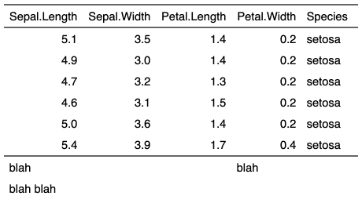

| add_header_row {flextable} | R Documentation |
Add an header or footer new row where some cells are merged, labels are associated with a number of columns to merge. The function is row oriented. One call allow to add one single row.
add_header_row(x, top = TRUE, values = character(0), colwidths = integer(0)) add_footer_row(x, top = TRUE, values = character(0), colwidths = integer(0))
x |
a |
top |
should the row be inserted at the top or the bottom. |
values |
values to add as a character vector |
colwidths |
the number of columns to merge in the row for each label |

Other headers and footers:
add_header_lines(),
add_header(),
set_header_footer_df,
set_header_labels()
ft <- flextable( head( iris ) )
ft <- add_header_row(ft, values = "blah blah", colwidths = 5)
ft <- add_header_row(ft, values = c("blah", "blah"), colwidths = c(3,2))
ft <- theme_tron(ft)
ft
ft <- flextable( head( iris ) )
ft <- add_footer_row(ft, values = "blah blah", colwidths = 5)
ft <- add_footer_row(ft, values = c("blah", "blah"), colwidths = c(3,2))
ft